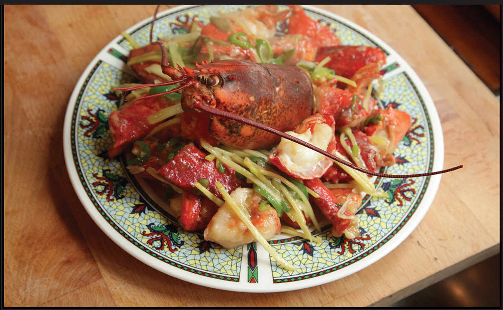

CANTONESE STIR-FRIED LOBSTER WITH GINGER AND SCALLIONS

I have fond memories of little me in my precollege years heading out to Boston’s Chinatown with my dad and two sisters to East Ocean City, home of the finest dry-style beef chow fun in the world (at least according to my little sister). The best trips were the ones where we’d stand in front of the giant tanks they keep at the front of the restaurant and pick out our dinner for the night. Sometimes it was spider crabs (the waiters would fish one out and hold its massive legs out at arm’s length), sometimes hairy crabs, but in the summer season it was lobsters.
The crustacean would get scuttled off into the kitchen to meet its maker while we sat at our table picking at razor clams with black bean sauce, shrimp-paste-stuffed hot green chiles, and live Maine sweet shrimp stir-fried plain in the shell with a dish of mild soy sauce for dipping the bodies into as you sucked the juices out of the heads.
When the lobster finally reemerged, it would come out chopped into large chunks, their surfaces crisp, lacy, and coated in a thin veneer of sauce. Tossed with slivers of ginger and sliced scallions, their primary aroma was sweet and spicy, the briny flavor of the lobsters coming through only once you started eating them.
There are no two ways about it. Eating Cantonese-style lobster with ginger and scallions is a gentlemen-start-your-wet-naps type of messy affair. The only way to get the meat out of the bones—particularly the slender knuckles and claws—is to poke, pry, and suck until you’ve removed every last scrap. I like that kind of meal—it makes you really work for your food and makes the whole event last a bit longer.
These days I’ve worked my way through enough recipes that I’m happy with where I’m at with my current version. I like a little bit of heat in my dish, so I add a single long Chinese hot green chile, as well as a handful of yellow chives, which have a milder, sweeter flavor than their green counterparts, like a very tender, young leek.
The cooking process is threefold, but each step is fast, so it doesn’t take more than half an hour from start to finish. The lobster first gets steamed (you can do it in a steamer or directly in the wok, as I do) just until it starts to cook through and firms up a bit. You then break it down and cut it into chunks, shell and all. A heavy cleaver helps here, but a good chef’s knife will work. The chunks are then coated in cornstarch and deep-fried for another moment until crisp on the exterior.
Finally, the lobster chunks get stir-fried with the aromatics along with a very small amount of sauce made from rice wine, soy sauce, and chicken stock lightly thickened with cornstarch. The crisp, lacy exteriors of the fried lobster pieces are the perfect surface for the aromatic sauce to cling to. It’s one of the tastiest (not to mention most impressive and unique) ways to eat lobster I know.
|
Yield Serves 4 |
Active Time 40 minutes Total Time 40 minutes |
Follow the step-by-step photos for details on how to break down the lobster. The strained oil can be cooled, then stored in a sealed container in the fridge for another use.
INGREDIENTS
For the Sauce:
1 tablespoon soy sauce
2 teaspoons (about 6 g) cornstarch
¼ cup (80 ml) Shaoxing wine or dry sherry
½ cup (120 ml) homemade or store-bought low-sodium chicken stock
For the Lobster:
2 lobsters, preferably soft-shell, about 1¼ pounds (575 g) each
¼ cup (30 g) cornstarch
1 quart (1 l) peanut, rice bran, or other neutral oil
For the Stir-Fry:
10 medium garlic cloves (30 to 40 g), thinly sliced
4 scallions, thinly sliced
1 long green chile (such as Chinese cowhorn or Anaheim), jalapeño, or serrano pepper, thinly sliced
1 hot red chile, such as Fresno or red serrano, thinly sliced
2 teaspoons (15 g) Dry-Roasted Salt and Pepper Blend (here)
12 yellow chives, cut into 2-inch pieces (optional)
DIRECTIONS
1 For the Sauce: Combine the soy sauce and cornstarch in a small bowl and mix until the cornstarch is dissolved. Stir in the wine and chicken stock. Set aside.
2 For the Lobster: Add 1 inch of water to a pot or wok and bring to a boil. Add the lobsters, cover, and steam for 3 minutes (you can use a wire rack steamer or just put the lobsters directly in the wok). Remove and transfer to a cutting board. Allow to cool slightly. Discard the water and wipe out the wok.
3 Twist off the tail and claws from the lobsters. Remove the guts from the lobster heads and rinse clean for garnish. Using a heavy chef’s knife or cleaver, split the tails in half lengthwise, then into thirds crosswise, forming 6 pieces. Transfer to a large bowl. Cut both knuckles from each claw and add to the bowl with the tails. Remove the small side of each claw by breaking it off by hand and add to bowl. Cut each claw in half, exposing the meat, and add to the bowl. Add the starch and toss to coat.
4 Heat the oil to 375°F (190°C) in a large wok, adjusting the heat as necessary to maintain the temperature. Carefully add the lobster pieces to the hot oil one piece at a time until half of them have been added. Fry, agitating occasionally with a spider, until the cornstarch coating is crisp and pale golden brown, about 1½ minutes. Transfer the lobster pieces to a colander set in a bowl to drain. Repeat with the remaining lobster. Carefully pour the hot oil out of the wok through a fine-mesh strainer set in a heatproof container (such as a large saucepan).
5 For the Stir-Fry: Wipe out the wok and return it to high heat until smoking. Add 2 tablespoons (30 ml) of the strained oil and swirl to coat. Add the garlic, scallions, and green and red chiles and stir-fry until fragrant, about 30 seconds. Add the lobster and the salt and pepper blend and toss to coat. Stir the sauce mixture and add to the wok, pouring it around the edges. Cook, stirring and tossing constantly until the mixture has bubbled and thickened, coating the lobster and vegetables. Immediately transfer to a serving platter, garnish with the lobster heads and the yellow chives (if using), and serve.